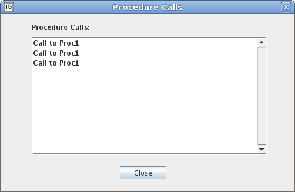

Show/Hide Body
Toggle the visibility of the subworkspace.
Table
Opens an Inspector for the subworkspace.
Edit
Opens the general settings dialog.

Identifier:
Determines which XML messages that will be received by the XML
Message In object. If it has a value then only messages with this as
its main element tag will be received. If the identifier has no value
then the local name of the object will be used instead. (Default: ChemMessageContent)
Subject:
If the value of the identifier is ChemContentMessage then Subject
acts as a secondary reception filter for incoming messages. Only messages
that contain a Subject element with a corresponding value will be received
by the XML Message In object. (Default: <empty>)
Topic:
If topic has a value then JGrafchart will automatically subscribe
to this topic when the application is started and unsubscribe to this
topic when the application is stopped. (Default: <empty>)
Type:
The CCOM type of the most recently received message.
Origin:
The origin (sender) of the most recently received message.
MustReply:
If this has the value "yes" then the most recently received
message expects a reply message.
Handle:
The handle of the most recently received message.
Procedure
Opens the procedure settings dialog.

Use procedure:
If checked, a procedure is spawned each
time a new message is received. (Default: Unchecked)
Procedure:
The procedure to spawn when the message is received. (Default: <empty>)
Procedure parameters:
The procedure call parameters using the usual
Call Parameters Syntax.
It is common to pass in the entire
XML Message In object as a parameter to a local workspace object within
the procedure. In this way the content of the received message is saved
and will not be overwritten by the next message. (Default: <empty>)
Calls
Opens a list with all currently executing invocations from this XML Message In. Select one to open that particular procedure call.
